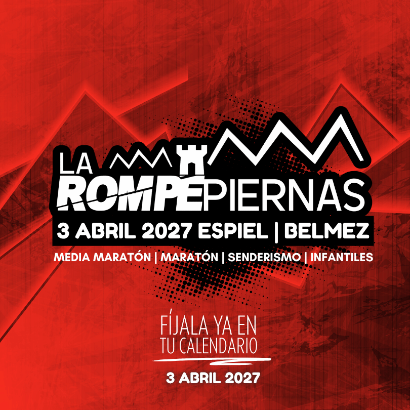
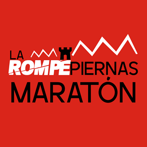
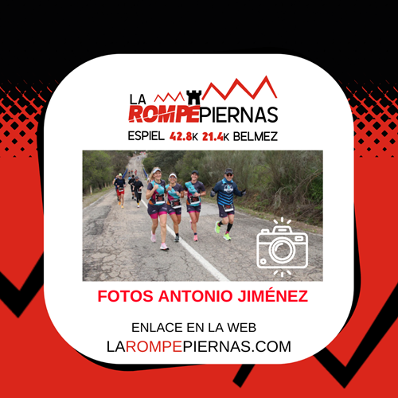
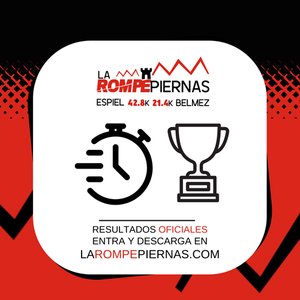

Reserva fecha el 3 de abril de 2027
El sábado 3 de abril 2027 es la nueva fecha para nuestra carrera La Rompepiernas. Estad atentos que abriremos inscripciones próximamente.

.
.
.
Una media maratón de asfalto con identidad. Dureza. Vistas de sierra. El Castillo de Belmez. Una prueba hecha para atreverse.
21.4K con 250+/250- m de desnivel
SALIDA: Espiel
META: Belmez
Reglamento próximamente
Una maratón de asfalto con identidad. Dureza. Vistas de sierra. El Castillo de Belmez. Una prueba hecha para retarse.
42.8K con 500+/500- m de desnivel
SALIDA: Belmez
PASO INTERMEDIO: Espiel
META: Belmez
Reglamento próximamenteComparte el mismo recorrido que los corredores. Dureza. Vistas de sierra. El Castillo de Belmez. Una ruta hecha para compartir.
21.4K con 250+/250- m de desnivel
SALIDA: Espiel
META: Belmez
Reglamento próximamenteLos menores también tienen su protagonismo en La Rompepiernas.
Distancias según edad.
Localidad: Belmez
Reglamento Menores próximamente
El sábado 3 de abril 2027 es la nueva fecha para nuestra carrera La Rompepiernas. Estad atentos que abriremos inscripciones próximamente.

Ya tenemos galería de fotos de Antonio Jiménez - salidas - metas - premios
PINCHA AQUÍ! Salida MARATÓN PINCHA AQUÍ! Salida MEDIA MARATÓN PINCHA AQUÍ! EN RECORRIDO PINCHA AQUÍ! PremiosYa tenemos galería de fotos de +Atletismo - salidas - metas - y más!
PINCHA AQUÍ! Fotos +ATLETISMOYa tenemos galería de fotos de la META de Senderismo, Media Maratón y de Maratón disponible
PINCHA AQUÍ! Fotos Meta Senderismo Aída Sújar PINCHA AQUÍ! Fotos Meta Media Maratón Aída Sújar PINCHA AQUÍ! Fotos Meta Maratón Aída SújarYa tenemos galería de fotos de la Ceremonia de Premios de Media Maratón y de Maratón disponible
PINCHA AQUÍ! Fotos Premios MediaMaratón y Maratón
Ya estan disponibles los resultados de esta edición
Resultados Maratón Resultados Media Maratón Resultados Menores